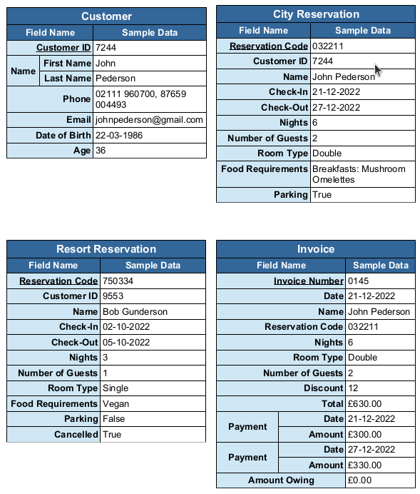
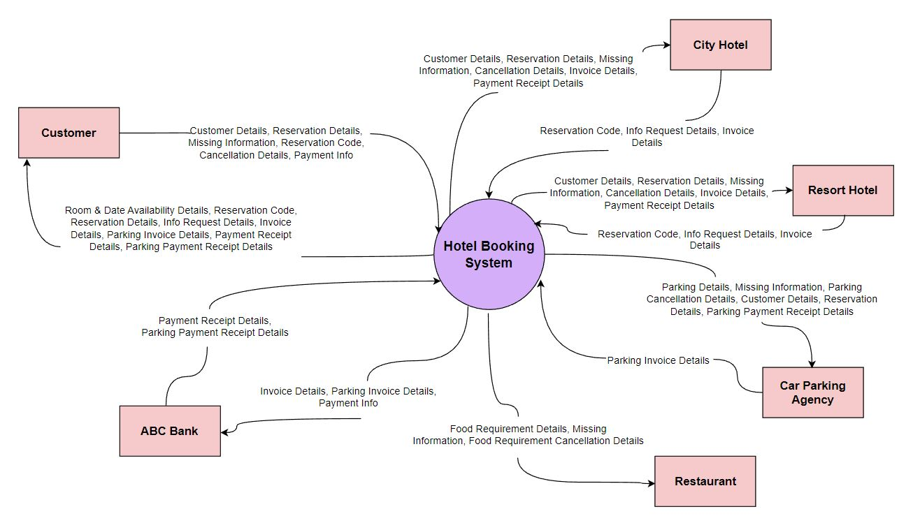

The purpose of the Hotel Booking System is to assist with room booking for two of the Hotels, the RESORT HOTEL and CITY HOTEL. Through the system, the Customers book the hotel with their choice of hotel and booking details such as arrival date, number of adults and children. The hotel can ask for any missing information such as meal choice, and country details the customer through email. The customer replies to the hotel with all the missing information. Both the hotel stores the customer details in their customer detail database. The hotel generates the bills on the arrival of the customer. While generating the RESORT HOTEL gives a 10% discount if the customer has stayed at RESORT HOTEL before and the CITY HOTEL gives a 12 % discount to any customer who has stayed at that hotel before. But, if any customer has a history of any cancellations in the past year then the RESORT HOTEL does not give any discount. All the payments are handled by ABC Bank. The bank generates the invoice of the payment and sends copies to the customer and the hotel. The system also communicates with a nearby Restaurant which looks after all the meal requests of the customer. The restaurant gets a notification about the food requirements of customers once the booking confirmation is generated. In addition, if any customer needs the car parking facility then the customer needs to notify while generating the booking details. The Car Parking Agency, co-partner of the hotel group handles the parking facility. The car parking invoice is generated separately and sent to the customer for payment at the time of departure.
1 Project Overview
1.1 Purpose of Document
The purpose of this document is to provide system designs to use in the development of the hotel booking system for City and Resort hotels.
1.2 Scope
The scope of the project involves an examination of the business scenario to ascertain how best to design, develop, and improve upon the proposed hotel booking system. In addition, creation of system designs and implementation documentation must be produced to drive the development of the project. The proposed solutions must include detailed logical & physical Entity-Relationship Diagrams, a Context Diagram, and up to Level 2 Data Flow Diagrams.
2 Software Development Methodologies
2.1 Waterfall
The Waterfall methodology contains five phases that are as follows: Requirements, Design, Implementation, Verification and Maintenance. Each of these phases are present in most methodologies however with the Waterfall approach each phase is followed by the next in strict fashion. The team can only progress to the next phase when the current phase has been completed and you cannot revert back to a previous phase. This approach is useful when a high level of reliability is needed for a project.
2.2 Agile
The Agile method is an iterative approach that allows for similar phases as Waterfall to be engaged simultaneously and in no specific order. The team is able to work in small increments allowing for customer input regularly. This methodology is far more flexible in terms of adapting to changes in customer wants and needs as they see the project develop.
2.3 Preferred Software Development Methodology
The fact that there are two hotels that will be using this system in essence means that there two clients to consider in the development of this project. Each client has unique requirements that differ from one another and are subject to change. As the hospitality industry is fast paced and endeavours to adapt to ever changing customer opinions, the Agile methodology is best suited for this project. As stated above, Waterfall is great for certain projects but is highly inflexible while Agile allows for development teams to incorporate client input in small, digestible increments. This approach will translate to a product that provides more utility to the customer which in turn will result in higher customer satisfaction. ( See Appendix – Waterfall Methodology & Agile Methodology )
3 Entity-Relationship Diagrams
3.1 Logical Entity-Relationship Diagram
The four entities in this diagram are as follows: Customer, City Reservation, Resort Reservation and Invoice. Each entity has a primary key that consists of a uniquely generated number. The system is purposefully designed with no weak entities and foreign keys as this is not advisable to create a robust system. The Customer can either book a reservation at the City or Resort hotel. There is a need to delineate the City and Resort hotel reservations because of their individual discount policies. Each hotel will only reward their customers with a discount when they have previously stayed at their specific location before. In addition, the Resort hotel will only provide a discount to customers who haven’t had any cancellations at their location in the past year. Therefore the Resort Reservation entity has an addition attribute labelled “Cancelled” that records whether any of the reservations have been cancelled. With the information supplied from the reservation entities the Invoice is populated. ( See Figure 1 )

3.2 Physical Entity-Relationship Diagram
The invoice entity contains a composite and multivalued attribute labelled “Payment” that allows for storage of the date and amount for payments made towards the total. When payments are made the “Amount Owing” attribute on the entry is updated accordingly. ( See Figure 2 )

3.3 Data Fields with Sample Data

4 Data Flow Diagrams
4.1 Context Diagram
Six (6) entities: Customer, City Hotel, Resort Hotel, Car Parking Agency, Restaurant and ABC Bank interact with the system from a data flow perspective. A hotel only interacts with the system if the customer has chosen the specified hotel. Each entity’s interactions with the system will be described in further depth in the items to follow. ( See Figure 4 )

4.2 Level 1 DFD
There are three (3) processes depicted at level 1 that handle the flow of data for the system. Process 1, “Booking”, involves making a reservation, obtaining missing information for the reservation and cancelling the reservation. Process 2, “Check-In”, is where the customer checks into their room and makes an initial payment. Process 3, “Check-Out”, ends the customer’s interaction with the system by settling the remaining balance on the invoice and paying the parking invoice if the customer has opted for parking. ( See Figure 5 )

4.3 Level 2 DFD – Booking Process 1
There are five (5) sub-processes depicted at level 2 of “Booking” Process 1. In Process 1.1 the customer submits their customer details which are then stored. Process 1.2 generates room and date availability information by examining current reservations which is then used by the customer to submit their reservation preferences. In Process 1.3 the reservation details are stored and the hotel sends the customer a reservation code and request, in the form of an email, to submit missing information. The only none mandatory fields that may be missing are “Food Requirements” and “Parking”. ( See Figure 1, Figure 2 and Figure 3 ) Process 1.4 gives the customer an opportunity to submit the missing information by clicking a link provided in the information request email and filling in the missing fields. This new information is then sent to the hotel, restaurant and parking agency along with being saved in the customer’s reservation entry. Process 1.5 allows the customer to cancel the reservation if desired. When a cancellation is made the “Cancellation” field is updated if it is a Resort reservation entry or it deletes the entry in the case of a City reservation. All relevant parties are then informed of the cancellation. ( See Figure 6 )
.JPG)
4.4 Level 2 DFD – Check-In Process 2
There are four (4) sub-processes depicted at level 2 of “Check-In” Process 2. In Process 2.1 the customer submits their reservation code which is then used to extract the customer’s details and reservation. This information is used by the hotel to generate an invoice which is then stored and a copy is sent to the customer in Process 2.2. In Process 2.3 the customer submits payment information which is then received by ABC bank along with the invoice. In Process 2.4 the bank handles the payment, sends payment confirmation to all relevant parties and the invoice entry is updated with payment details. ( See Figure 7 )
.JPG)
4.5 Level 2 DFD – Check-Out Process 3
There are three (3) sub-processes depicted at level 2 of “Check-Out” Process 3. In Process 3.1 the customer submits their reservation code which is then used by the hotel to bring up the customer’s details, reservation and invoice. The customer details and reservation are also sent to the Car Parking Agency which uses Process 3.2 to send the customer a parking invoice along with their hotel invoice. In Process 3.3 the customer submits payment information for both invoices, which is then received by ABC bank along with both invoices. In Process 3.4 the bank processes the payment and sends payment confirmation to all relevant parties and the hotel invoice entry is updated with payment details. ( See Figure 8 )
.JPG)
5 Improvements
5.1 Additional Review Process
An improvement upon the system could be achieved by adding a fourth process at level 1 to prompt the customer to provide a review. The review information could then be stored in an additional field in the reservation data stores. This review information could then be analyzed by AI technology to produce actionable suggestions on how to improve the customer’s experience.
5.2 Sentiment & Intent Analysis
Natural language processing could be employed to analyze thousands of reviews to identify recurring themes and topics reported on by customers. These can then be rated so that hotel staff can see how customers feel and why they feel that way. This would allow for staff to see where best to make improvements to their services thereby increasing customer satisfaction. ( See Appendix – Sentiment & Intent Analysis )
Appendix
References
Waterfall Methodology
https://www.projectmanager.com/guides/waterfall-methodology/
Agile Methodology
Sentiment & Intent Analysis
https://www.lexalytics.com/technology/sentiment-analysis/
https://www.lexalytics.com/technology/intentions/